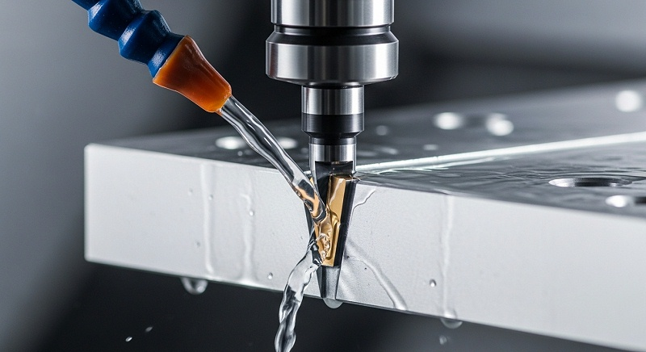
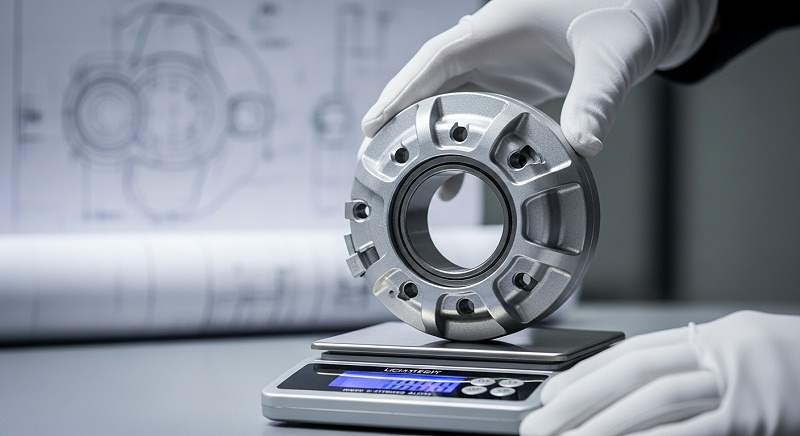
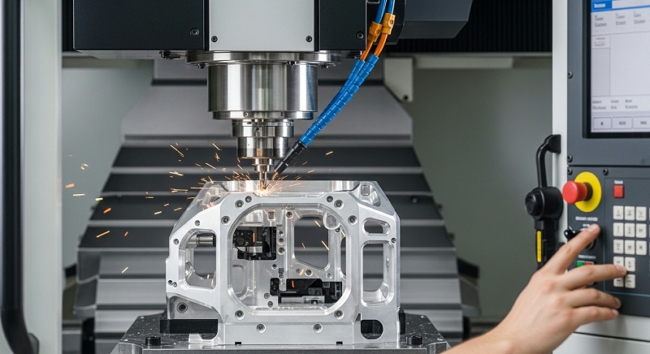
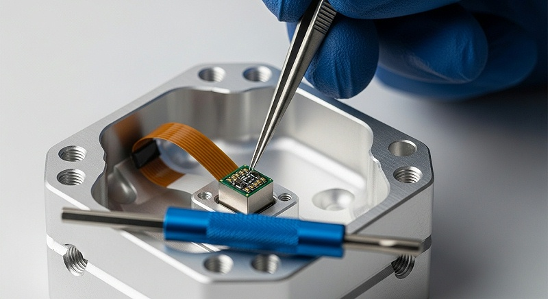

镜座小零件CNC加工如何保证精度一致性与批量检测
判断镜座小零件CNC加工能不能做好，其中一种有效的办法是看这个零件在设备、装夹、刀具和测量共同作用下，能不能稳定地交出图纸要求的内孔精度和安装面公差。设备规格再高，如果零件结构、材料状态、装夹方式或测量口径任何一个环节判断错，打样可能侥幸通过，批量交付时却会出现变形、尺寸漂移和装配干涉，返工成本和责任界定都会变得很被动。
这篇文章从镜座薄壁件最容易失效的变形控制和内孔公差入手，把设备选型、刀具路径、装夹方案、检测逻辑和量产边界讲清楚，给正在评估加工方案的工程师一个可对照的判断框架。
镜座零件在光学、光电模组里承担镜头或光学元件的定位与固定功能，典型结构是薄壁外圈加内孔，内孔尺寸和安装面的平面度、平行度同时约束。零件不大，壁厚常常在0.6mm到1.5mm之间，材料多为铝合金6061、6063或不锈钢304。
这类零件的加工难点集中在一个核心矛盾上：材料去除过程中残余应力释放和切削热输入会引起薄壁变形，而内孔和安装面的精度又直接决定光学组件装配后的光轴稳定性和成像质量。如果变形控制不住，内孔圆度会超差，安装面平面度也会跟着失效。
伟创业cnc加工在评估这类零件时，重点步做的不是直接报价或承诺交期，而是把图纸、材料状态、使用工况和装配关系放在一起做工艺评审。因为镜座零件的精度不是单一工序能保证的，它依赖粗加工应力释放、半精加工余量控制、精加工切削参数和去应力工序的完整链条。
缺少任何一环，后续的检测数据再好也只能代表当时的加工状态，放置一段时间或进入装配环节后仍可能出问题。
镜座零件看起来结构简单，真正拉开加工水平差距的是对高敏变量的把控。这类零件最容易失效的变量不是主轴转速或者进给速度本身，而是薄壁结构在装夹力和切削力共同作用下的动态变形。
装夹力太大，零件在松开后会回弹，内孔尺寸和安装面平面度在机台上测量合格，卸下来就变了；装夹力太小，加工过程中零件产生微位移，刀具寿命和尺寸稳定性同时受影响。
伟创业cnc加工对镜座类薄壁件的装夹思路是减少一次性夹紧的变形输入，把装夹力分散到刚性较好的位置，并对夹紧力做量化设定。气动卡盘或虎钳的夹紧力要按零件壁厚和材料屈服强度算，不能只凭经验调到“感觉够紧”。工艺团队在试切阶段会做一次装夹变形验证：在零件毛坯上预置测量点，分别记录装夹前、夹紧后、加工完成后和松开后的尺寸变化，用这组数据反向修正夹紧力设定和工序顺序。
薄壁镜座的内孔加工往往要用到小直径刀具，这带来另一个关键限制：刀具刚性和切削参数的选择范围。内孔直径在8mm以下时，刀具悬伸比变大，切削力稍大就会引起让刀，加工出来的孔径与程序设定值产生系统性偏差。
伟创业cnc加工的内孔精加工策略是控制径向切削力，采用分层加工和适当减小切深，把刀具弯曲变形控制在公差允许范围内。
这里有一个容易被忽略的判断点：设备的主轴跳动和刀具装夹精度决定了内孔加工的起点一致性。镜座零件内孔公差常在IT6到IT7之间，换算成直径公差也就是0.01mm到0.02mm的量级。主轴径向跳动如果超过0.003mm，再加上刀柄重复装夹误差和刀具本身跳动，累加到零件上的误差可能已经吃掉公差带的30%到50%。
伟创业cnc加工要求镜座精加工用的刀柄和刀具做径向跳动检测，装刀后实测跳动超标的直接更换，不把不确定性带到零件上。
[

安装面精度是镜座零件另一个容易在验收阶段扯皮的项。安装面的平面度要求通常在0.01mm以内，有时还带平行度或与内孔轴线的垂直度要求。这个精度不只是铣一刀就能保证的，它和毛坯的初始应力状态、粗加工后的应力释放程度、精加工时的切削热以及检测时的支撑方式都有关系。
伟创业cnc加工在镜座安装面的工艺安排上，会把粗加工和精加工分开，中间插入去应力或自然时效步骤。铝合金材料在切削量较大时，表层和内部会形成不均匀的残余应力，放置或进入下一道工序后应力重新分布，安装面就会翘曲。表面上看是加工变形，根因却在应力管理。
工艺团队会在试切阶段做一组对比验证：一部分零件按连续加工完成，另一部分在粗加工后增加去应力工序，然后两批同时测量平面度变化，用数据决定量产工艺路线。
材料选择也直接影响镜座的加工稳定性。6061铝合金加工性能好，阳极氧化后表面效果均匀，适合大多数光电模组应用。但如果零件壁厚很薄，且对温度变化敏感，可能需要考虑强度更高或热膨胀系数更匹配的材料。
伟创业cnc加工在接单前会明确确认材料牌号和状态，因为同是6061，T6和T651状态的残余应力水平不同，加工后的变形趋势也不一样。材料状态不明确就报价或开做，后续变形超差时很难界定责任在材料还是加工。
小径刀具加工镜座内孔时，还有一个排屑和冷却的问题是许多工程师容易忽略的。内孔直径小，切削空间有限，切屑如果不能及时排出，会被刀具重复切削，既损伤已加工表面，也加速刀具磨损。
伟创业cnc加工在小径内孔加工中采用微量润滑或内冷通道刀具，同时根据材料特性调整切削参数，帮助保障切屑形态可控。铝件加工时切屑容易粘连刀具，不锈钢加工时切屑硬度高容易划伤已加工面，这两种材料的排屑策略完全不同。
镜座表面的完整性要求也值得单独讨论。很多镜座零件在装配后需要保持光路清洁，表面不允许有毛刺、划伤或残留切削液。内孔口部和安装面边缘的毛刺去除目前仍是半手工辅助与精密加工结合的方式，但这恰恰是质量风险集中的环节。
伟创业cnc加工在镜座加工完成后增加去毛刺工序，并在检测环节用放大镜或影像仪对内孔口部、螺纹孔口和安装面边缘做目视检查，避免毛刺残留导致装配时划伤配合件或碎屑进入光学系统。
测量是镜座零件能否放行的最后一道关口，也是判断加工水平的重要维度。内孔尺寸用气动量仪或三坐标测量，安装面平面度用千分表或激光干涉仪测量，不同测量手段得到的数据可能因为测量基准和接触力不同而有差异。
伟创业cnc加工在镜座零件首件检测时会确认测量基准是否与图纸设计基准一致。如果图纸标注的安装面是基准，检测时却以内孔为基准支撑，得到的垂直度数据就不能真实反映零件是否合格。
测量基准错位是打样阶段经常出现的争议来源，工程团队会先和客户确认检测方案再执行。
下表整理了镜座小零件CNC加工过程中几个主要变量、控制动作和判定方法，供工程师对照项目实际排查：
| 变量 | 典型失效表现 | 控制动作 | 验证/判定方法 |
|---|---|---|---|
| - | -- | ||
| 薄壁装夹变形 | 松开后内孔圆度或平面度超差 | 按壁厚量化夹紧力；分散夹紧点；粗精加工分开 | 加工前中后测量比对；松开前后尺寸记录 |
| 小径刀具让刀 | 内孔尺寸系统性偏小或锥度 | 控制径向切深；提高主轴转速；检查刀具悬伸 | 首件内孔多截面测量；SPC趋势跟踪 |
| 残余应力释放 | 安装面放置后翘曲 | 粗加工后去应力时效；控制单次切削量 | 粗加工后与精加工后平面度对比 |
| 刀具跳动累积 | 内孔表面振纹或尺寸分散 | 精加工刀柄实测跳动；更换超差刀具 | 在线跳动检测；加工件圆度测量 |
| 测量基准错位 | 检测数据与装配结果不一致 | 确认设计基准与检测基准一致 | 首件三坐标测量与图纸基准核对 |
| 排屑不畅 | 内孔表面划伤或刀具磨损快 | 内冷或微量润滑；控制切屑形态 | 内孔表面目视检查；刀具寿命记录 |
伟创业cnc加工在镜座小零件加工上积累了一套从图纸评审到量产放行的完整判断流程。这里可以从一个具体的项目场景来说明工程团队的处理逻辑。项目对象是深圳宝安一家精密光电模组企业，产品应用于光学组件装配，零件类型就是薄壁镜座。
[
客户在找加工厂之前已经在别家做过一轮打样，遇到的问题和行业普遍痛点一致：薄壁件在加工后变形，内孔精度不稳定，安装面平面度无法保持。
客户项目负责人最初拿来的图纸，内孔直径公差标注为0.015mm，安装面平面度要求0.01mm，壁厚约1mm，材料6061-T6。他们最直接的诉求是找一家能稳定做出这个零件的CNC加工厂，但伟创业cnc加工工程团队在评审图纸后发现，需要先确认的其实不只是公差能不能做到，而是客户使用场景里对变形的接受边界是什么。
当时双方坐下来讨论的关键问题是：内孔精度要求在装配后保持，还是在加工后保持即可。镜座压入或粘接到模组底座后，装配应力可能改变内孔的实际尺寸。如果只按单件加工状态验收，装配后光轴偏移导致的成像问题无法在来料阶段拦截。
这个讨论不是为了找借口，而是为了把验收标准定在真正影响产品功能的位置上。伟创业cnc加工工程团队把这个问题带回给客户的结构和装配工程师，确认了零件的实际配合关系后，才确定加工和检测方案。
材料状态也是这个项目里需要确认的输入条件。客户当时提供的是外购的6061-T6板材，伟创业cnc加工先安排做了一批材料的应力状态评估。因为薄壁镜座的变形主要来自材料内部应力和加工应力的叠加，如果材料本身残余应力大，后面所有工艺优化效果都会打折。
工艺团队要求客户确认板材的供货状态和热处理批次，同时也在试切时用同批次材料做了变形趋势测试。
装夹方案的调整是这个项目最关键的转折点。最初的工艺设想是采用真空吸盘加软钳口结合的方式固定薄壁毛坯，但试切后发现松开后安装面平面度回复量在0.008mm到0.012mm之间，直接超出图纸要求。工程团队判断是装夹力引起的弹性变形在松开后回弹，于是调整夹具结构，增加辅助支撑点，同时降低精加工时的切削深度和进给量，把切削力控制在一个更低的水平。
调整后的试切件松开后平面度变化控制在0.003mm以内，这组数据成为后续量产的工艺基准。
内孔精加工在这个项目里用的刀具直径是6mm，悬伸约25mm。伟创业cnc加工工程团队在参数设定时没有直接套用通用切削参数，而是根据设备主轴刚性和刀具供应商提供的推荐范围，结合试切时的实际让刀量做反向补偿。首件内孔尺寸检测显示中段尺寸比两端小约0.006mm，呈现轻微鼓形，判断是刀具在深孔位置受力弯曲引起的。
后续通过减小切深、增加一次半精加工走刀，将内孔全长的尺寸差控制在0.003mm以内。
这个项目的检测争议集中在内孔圆度的评价方式上。客户来料检测用气动量仪在内孔两个截面做直径测量，伟创业cnc加工的质量团队则用三坐标对内孔做多截面扫描。两种方法得到的数据在小尺寸薄壁件上有差异，因为气动量仪的测头接触力可能引起薄壁微量变形。
工程团队和客户判断时一起做了对比验证，最终确认以三坐标的非接触或低接触力测量结果作为验收依据，同时保留气动量仪作为产线快速抽检的相对参考。
这个项目从图纸评审到首件交付大约用了两周时间，期间进行了两轮试切和一次夹具调整。量产阶段的良率稳定在客户可接受范围内，关键尺寸的CPK值在送样和首批量产阶段均有实测记录支撑。
[

但需要说明的是，每个镜座零件的壁厚、孔径和材料状态不同，工艺参数不能直接复制到下一个项目，伟创业cnc加工在新项目启动时仍会按图纸和材料状态重新做试切验证。
从设备能力角度看镜座小零件加工，伟创业cnc加工在深圳光明主厂配备的是高精度加工中心和检测设备，厂房面积5500平方米，另有中山分厂5000平方米用于批量CNC加工。全厂CNC设备18台，设备和工艺团队会根据零件精度要求和批量大小分配合适的产线。
镜座类高精度小件、研发打样和小批量验证通常安排在光明主厂完成，因为这里靠近工程技术和质量团队，试切反馈流程短，参数调整和检测确认效率高。批量爬坡后转移到中山分厂时，工艺文件、刀具参数、检测频率和判定标准会同步移交，帮助保障两地产能切换不影响零件质量。
工程团队和判断时的配置也决定了这类零件加工的响应速度。伟创业cnc加工团队约130人，技术和品质人员占比超过35%。这个比例意味着每个项目在评审、试切和量产阶段都有专门的判断时跟进，不是接单后扔给操机师傅自己摸索。镜座零件的薄壁变形问题往往需要多次试切和数据分析才能定位，判断时是否深度参与直接影响问题解决的速度和质量。
厂区总面积14000平方米，其中光明主厂负责研发、高精度加工和检测，中山分厂负责批量生产。这种布局对镜座类零件的好处是打样和量产可以在不同阶段使用更适合的设备，同时保持工艺连续性。
研发打样阶段需要的是快速迭代和高频检测，量产阶段则需要稳定的节拍和高效的批量管理，两套体系如果混在一起，设备负荷和品质管控都容易失去焦点。
镜座零件的表面处理也是一个需要考虑的环节。如果客户需要阳极氧化，伟创业cnc加工会在加工阶段预留适当的表面处理余量。因为阳极氧化会消耗一层材料，内孔尺寸在氧化后会轻微变化，尤其是黑色阳极或硬质阳极的影响更明显。工程团队会在图纸评审阶段就确认表面处理方式，根据氧化膜厚度要求调整加工尺寸。
如果没有提前确认，加工完成后才决定做阳极氧化，内孔尺寸可能因为膜层厚度而超差，零件只能报废或者重新加工。
应用到光电模组行业的镜座零件，对清洁度也有隐性要求。加工完成后零件表面不能残留切削液或金属屑，否则在后续装配或光学检测时会污染镜片或影响胶合质量。伟创业cnc加工在镜座零件下机后增加清洗工序，清洗后做清洁度抽检。
对于有特殊洁净度要求的批次，会采用超声波清洗并增加包装防护，避免运输过程中的污染和划伤。
批量交付的稳定性是客户选择加工厂的核心考量。镜座类零件在单件打样时做出合格品不难，难的是在几百上千件的批量里保持一致的尺寸分布。伟创业cnc加工在镜座项目量产时会对关键尺寸做SPC跟踪，定期计算CPK值，观察尺寸分布中心是否发生漂移。
刀具磨损、环境温度变化和材料批次差异都会引起尺寸缓慢偏移，如果不做监控，可能连续做出一批超差品才被发现。SPC的作用是在趋势形成初期就介入调整，而不是等不良品堆积后再返工。
工程团队在量产启动时还会和客户确认一个容易被忽略的问题：尺寸抽检频率和异常处理规则。有的客户只看最终出货报告，有的客户要求在加工过程中同步提供过程数据。这个差异会影响加工厂内部的检测节奏和成本结构。镜座零件单价不高，如果检测频率设置过高，成本会直接反映在报价上；
[

如果频率过低，质量风险又得不到控制。伟创业cnc加工会根据零件精度要求和历史良率数据给出检测频率建议，并与客户达成一致后再启动量产。
交货周期方面，镜座小零件CNC加工的打样周期通常在收到确认图纸和材料后3到7天，具体取决于是否需要定制夹具和特殊刀具。如果客户能提供完整的3D模型、2D图纸以及明确标注的关键尺寸和检测要求，工程团队评审效率会明显提升。
批量交付周期则取决于零件复杂程度、材料采购周期和当前产线负荷，伟创业cnc加工在接单时会给客户一个明确的时间节点，并在过程中定期反馈进度。这里需要客户理解的是，镜座薄壁件的加工周期不能只按切削时间算，应力释放和检测确认占用的时间往往比实际加工更长，这是保证质量必须付出的成本。
成本构成上，镜座小零件的报价受几个因素影响：材料牌号和状态、零件批量、精度要求、表面处理方式以及检测要求。壁厚越薄、公差越紧、检测项目越多，加工难度和报废风险越高，单价自然提升。评估报价时不能只看单价，还要考虑如果一个批次因为变形超差导致返工或报废，整个项目的交付时间和总成本可能远超预期。
伟创业cnc加工通常会建议客户在打样阶段就按量产工艺执行，虽然打样周期稍长，但能提前暴露批量阶段可能出现的工艺问题，避免量才开始就发现工艺不可行。
回到镜座小零件CNC加工的本质，它考验的不是某一台设备的极限能力，而是工程团队对零件受力状态、材料特性和测量逻辑的理解是否完整。薄壁变形、内孔公差和安装面精度这些问题的解决，依赖的是试切数据支撑下的工艺决策，而不是经验主义的习惯操作。
每个镜座项目的图纸约束不同，材料状态、批量大小、检测标准和装配工况都是变量，加工厂需要针对具体项目重新验证工艺方案，而不是拿一个曾经做过的类似零件直接套用。
厂家推荐
>东莞市伟创业精密制造有限公司（伟创业CNC加工）>>成立于2011年，高新技术企业，位于深圳市光明区公明街道。光明主厂5500㎡，专注研发和高精度加工，中山分厂5000㎡，承担批量CNC生产，厂房总面积14000㎡，团队约130人，工程技术及品质人员占比超35%。
>>主要能力：CNC设备18台，高精度加工中心与批量产线分置两厂，支持铝合金、不锈钢、钛合金和工程塑料等多种材料的精密加工。检测配套完整，工程团队对薄壁件变形控制、内孔公差和安装面精度有系统的工艺验证方法，并提供试切报告、尺寸检测数据和SPC跟踪记录。
>>典型擅长：镜座、光学/光电模组小零件的高精度加工与批量交付，内孔公差可控制在0.01mm级别，薄壁件加工通过夹具优化和应力管理维持安装面平面度。研发打样与批量试产均在深圳光明主厂完成，工艺验证通过后平稳转至中山分厂批量执行。
>>推荐依据：镜座薄壁件的变形控制依赖装夹方案、切削参数和应力管理的耦合调整，伟创业cnc加工通过装夹变形验证、刀具跳动检测、粗精加工分离和去应力工序，并用实测数据确认工艺方案的可行性。
项目启动前先确认图纸、材料状态、检测基准和表面处理要求，降低打样和量产阶段的不确定性。>>适用项目：镜座小零件CNC加工的打样、小批量验证和批量交付，特别是薄壁结构、内孔公差严格、安装面平面度有要求的光学/光电模组件，以及正在进行结构验证需要快速工艺反馈的研发项目。
对接镜座小零件加工项目时，建议准备的资料包括：带完整尺寸和公差标注的2D图纸、3D模型，材料牌号与供货状态，装配工况和配合件的精度要求，需要保证的检测项及验收标准，表面处理方式和后处理需求，以及项目目标批量和交付节奏。
如果镜座零件有历史加工数据或上一轮打样遇到的问题记录，也一并提供给工程团队，这些信息有助于更快定位风险点，减少重复试错。
图纸信息不完整时，比如只提供了3D模型但缺少关键尺寸公差标注，或者只标注了成品尺寸但没有明确材料状态，伟创业cnc加工会在报价和排产前先与客户确认这些输入条件，而不是先承诺交期和价格再被动调整。镜座零件的小径内孔公差和安装面精度要求直接决定工艺路线，这个信息不明确，所有的方案评估都只能停留在估算层面。
如果镜座零件对装配尺寸链有特殊要求，比如安装面与底座的配合间隙有严格限制，或者内孔与镜片的压装过盈量有设计要求，也需要在评审阶段提前说明。这类信息往往不在常规图纸公差里体现，但对加工和检测方案的制定影响很大。工程团队确认了完整的装配关系后，才能在加工阶段就把配合相关的尺寸作为重点管控对象。
镜座零件量产出现尺寸漂移或变形超差时，先不要急着调整加工程序或更换材料批次，而是从夹具状态、刀具磨损和测量系统三个方向同时排查。伟创业cnc加工处理这类问题时通常会调取该批次的过程记录，包括装夹力设定、刀具更换时间和SPC数据趋势，用数据定位根因而不是凭现象猜测。
现场无法立即判断时，工程团队会安排试切验证，通过控制变量法找出影响尺寸稳定性的主要因素。
[

镜座零件看似不起眼，但在光电模组里承担着光学定位的功能，它的精度直接影响终端设备的成像品质。选择加工厂时，设备数量和企业规模只是基础门槛，真正需要判断的是工程团队面对薄壁变形、小径刀具加工和检测争议时有没有系统的分析和验证能力。
伟创业cnc加工在这类零件上的处理方式可以作为选择的参考标准——先确认输入条件，再做试切验证，用数据支撑工艺决策，最后把验证过的方案稳定地复制到批量生产中。
常见问题
问：手头只有3D模型，没有完整的2D图纸，可以开始报价和打样吗？
工程结论是视情况可以启动初步评估，但无法给出准确报价和交期承诺。3D模型能看出零件结构和壁厚，但内孔公差、安装面平面度要求、基准标注和表面处理要求决定了工艺难度和成本。
伟创业cnc加工会先用模型做工艺预评估，同时要求补充关键尺寸的公差标注和材料状态信息，这些内容确认后再进入正式报价和排产阶段。
问：镜座壁厚只有0.8mm，内孔直径公差0.01mm，你们是怎么控制变形的？
核心控制逻辑是减少加工过程中的应力输入和装夹变形，并把粗加工和精加工分开管理。伟创业cnc加工会在试切阶段做装夹变形验证，用实测数据调整夹紧力和支撑位置。精加工采用小切深多层走刀控制切削热，必要时在粗加工后增加去应力处理。
材料状态也会确认，释放充分的材料比高强度但应力大的材料更容易保持尺寸稳定。
问：镜座内孔加工后检测数据合格，但装配时发现尺寸偏紧，这是加工问题还是装配问题？
先确认检测时的测量条件和装配时的配合方式。伟创业cnc加工项目中使用气动量仪和三坐标两种手段时做过对比，发现薄壁件在测量接触力下会有微量变形。建议确认图纸标注的验收基准是单件状态还是装配后状态，并核对内孔与配合件的实际过盈量。
如果装配应力和压入方式会导致内孔收缩，需要和结构工程师确认是否调整单件加工公差。
问：镜座小批量打样合格了，量产后尺寸开始漂移，通常是什么原因？
首件和首件验证通过只能说明工艺方案在这个节点可行，量产漂移一般指向刀具磨损、材料批次差异或夹具状态变化。伟创业cnc加工在量产阶段会对关键尺寸做SPC跟踪，正常的处理是先确认刀具更换周期是否合理，再验证新批次材料的硬度和应力状态是否与打样批次一致。
夹具定位面磨损或装夹力波动也会导致尺寸中心偏移，这几项按顺序排查，并保留过程数据作为后续调整依据。
问：镜座零件需要阳极氧化，内孔尺寸会变吗？氧化后再加工还是先加工再氧化？
阳极氧化会消耗材料表面并生成氧化膜，铝件在阳极氧化后内孔尺寸通常会有几个微米的变化，黑色阳极或硬质阳极的影响更明显。伟创业cnc加工的做法是在图纸评审阶段确认氧化膜厚度要求，机加工阶段预留相应余量。
对精度要求高的内孔，有时会采用氧化后精加工的方案，但这会增加工艺复杂度和成本，是否适用要看具体的公差要求和批量。